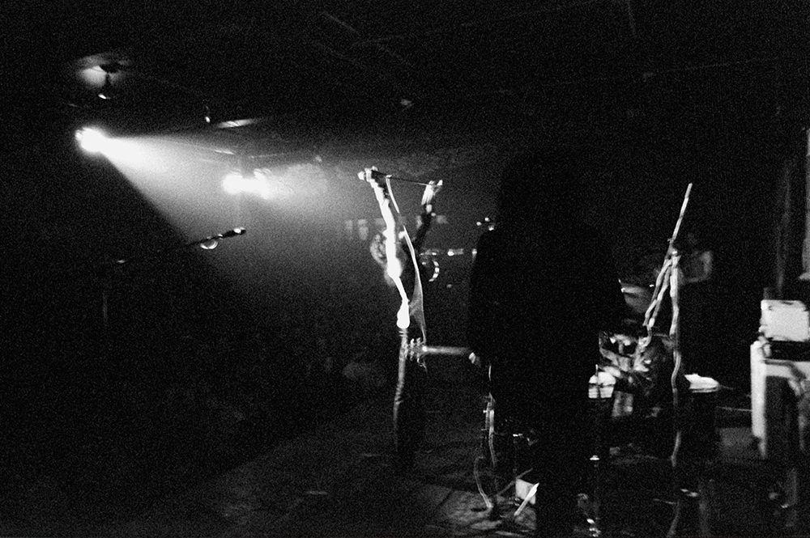
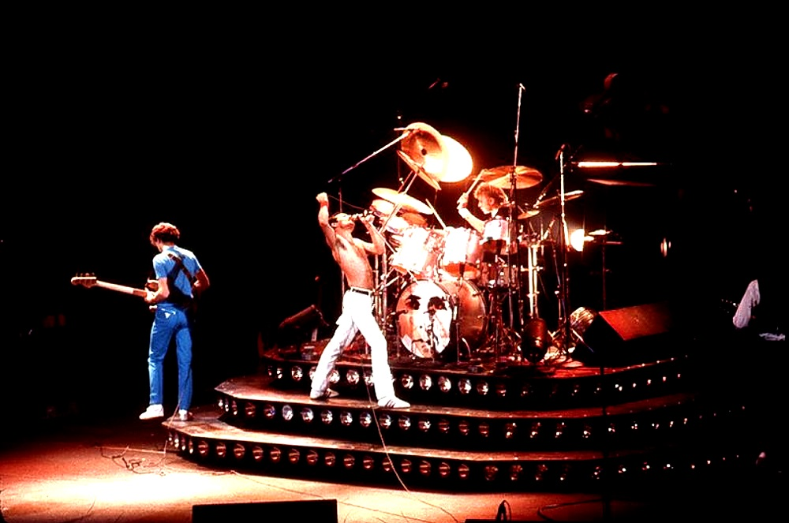
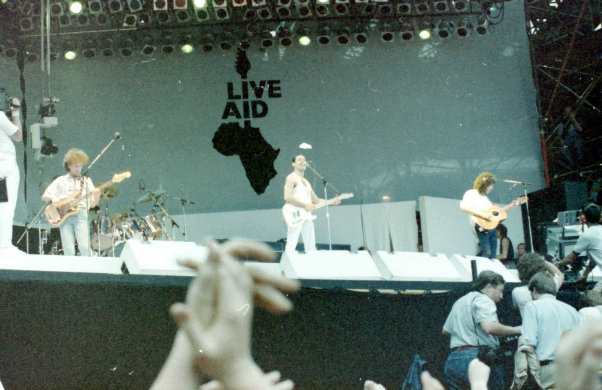

Freddie Mercury and the Hectics 1958

Freddie Mercury en 1965

Queen en 1970

Queen en Avril 1973 à Londres

Freddie Mercury en Janvier 1974 à Melbourne

Queen en Janvier 1975 à Taunton

Queen en Novembre 1981 à Montréal

Queen en Juillet 1985 à Londres

Queen en Juillet 1986 à Budapest

Queen en Juillet 1986 à Knebworth

Queen en février 1990 à Londres (dernière apparition publique)
Queen en Novembre 1981 à Montréal
Concert complet de Queen à Wembley